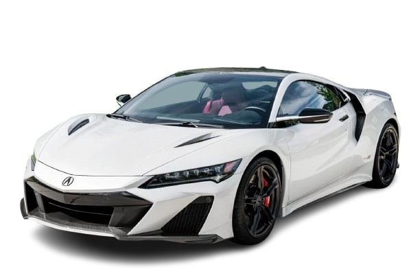
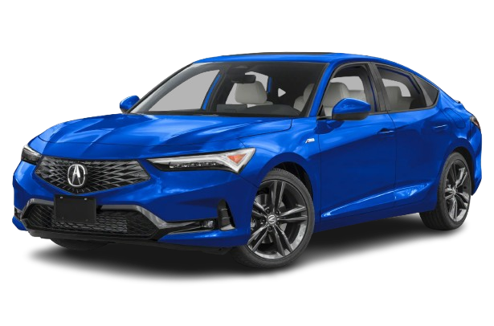
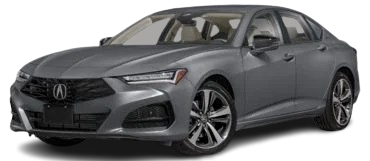
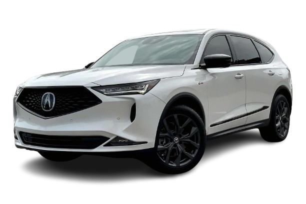

Acura
Historia de la marca
Acura es la marca de lujo de Honda, creada en 1986 en Estados Unidos. Fue la primera marca japonesa de lujo, diseñada para competir con fabricantes europeos como BMW o Mercedes-Benz.
Fundador
Acura no tiene un fundador único como otras marcas, ya que fue creada por la empresa japonesa Honda Motor Company como su división de lujo.
Primer coche
Uno de los primeros modelos fue el Acura Legend, una berlina de lujo que destacó por su fiabilidad y calidad. También el Acura Integra fue muy popular por su carácter deportivo.
Datos importantes
- Fundación: 1986
- País: Japón / Estados Unidos
- Empresa matriz: Honda
- Especialidad: Coches de lujo y deportivos
Modelos famosos
- Acura NSX
- Acura Integra
- Acura TLX
- Acura MDX



